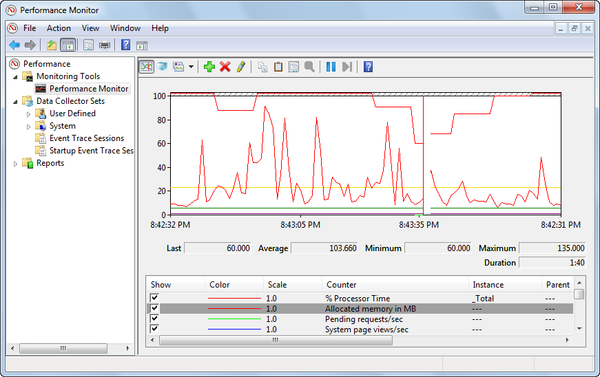

Health monitoring
Health monitoring enables website administrators to monitor and record load and performance of Kentico instances. The feature only stores monitored values about the system in Windows performance counters. It does not perform the actual monitoring. For this purpose, you can use external applications, for example the built-in Performance monitor in Microsoft Windows.

Performance monitor in Microsoft Windows
Monitoring of some of the values requires database access. To optimize performance in this case, you can install a dedicated Windows service and let it handle monitoring of these values instead of the application.
To start using health monitoring:
Enable Health monitoring in Kentico
Use an external application to monitor values (for example, the Performance monitor)
Kentico EMS required
Features described on this page require the Kentico EMS license.
Application name web.config key
Before getting to the counters, it is important to explain the following key in the appSettings section of the instance's web.config file:
<add key="CMSApplicationName" value="Default Web Site/CMS" />This key is added to the web.config file automatically during installation. In case of IIS installation, the path to the instance in IIS is used as the key's value. In case of a Visual Studio web server installation, the name of the target web project root folder is used. The value must be less than 60 characters long. In general, the value of the key is used by Kentico Windows services to identify Kentico instances. Specifically for Health monitoring, the value is used to identify performance counters to which the monitored values about the instance are written.
In case of Visual Studio web server installation, it is possible that multiple instances running on a single server may have identical values of the key (if the instances are installed into folders with the same names). In this case, you need to ensure that the keys have different values. Otherwise, values from these instances may be written to the same counters.
Performance counter categories
Kentico performance counters are stored in two categories:
Kentico - General (<CMSApplicationName>) - contains general counters monitoring the Kentico instance as a whole. It contains single‑instance counters, which means each of the counters can be added to the list of monitored counters just once. If a counter is present in this category as well as in the Sites category, its value in this category is a sum of values of all site instances of the counter in the Sites category.
Kentico - Sites (<CMSApplicationName>) - contains site specific counters monitoring particular websites running in the Kentico instance. It contains multi‑instance counters, i.e. each of the counters can be added to the list of monitored counters multiple times — once for each website running in the instance. These counters are used only if the Enable site counters option is enabled in Settings -> System -> Health monitoring.
The <CMSApplicationName> part of the category names is the value of the CMSApplicationName web.config key explained in the previous section. For IIS installations, the value is reversed in the category names so that website name is stated first and the IIS path after it. For example, if the IIS path is Default Web Site/CMS, you would have CMS/Default Web Site in the name of the category. This should provide better orientation in the category list in Performance Monitor.
Performance counters definition XML
In ~\CMS\App_Data\CMSModules\HealthMonitoring, you can find the counters.xpc file. This is a file in XML format which contains definitions of default performance counters for the respective instance of Kentico. It contains definitions of both General and Site counters. When performance counters are registered in Windows, this file is accessed to get the list of counters to be registered.
Apart from this default file, the whole folder structure under ~\CMS\App_Data\CMSModules\ is also searched for other files with the .xpc extension when counters are registered. The other files can contain definitions of additional performance counters and when found, the counters are registered as well.
The following code is an extract from the counters.xpc file:
<?xml version="1.0" encoding="utf-8"?><Counters><Counter Key="allocatedmemory" Name="Allocated memory in MB" Description="The size of allocated memory in megabytes." Type="NumberOfItems32" Enabled="True" OnlyGlobal="True" /><Counter Key="pendingrequestspersecond" Name="Pending requests/sec" Description="The number of pending requests per second." Type="NumberOfItems32" Enabled="True" OnlyGlobal="True" PerSecond="True" />...</Counters>Each counter element has the following attributes:
Key - counter key used for identification.
Name - name of the counter displayed in Performance Monitor or another monitoring tool.
Type - the type of the counter, all types are listed and explained at: http://msdn.microsoft.com/en-us/library/system.diagnostics.performancecountertype.aspx
Enabled - indicates if the counter is enabled.
OnlyGlobal - indicates if the counter is included in the General category (true) or in both General and Sites categories (false).